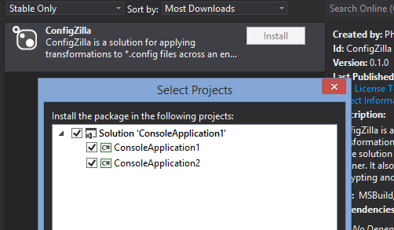
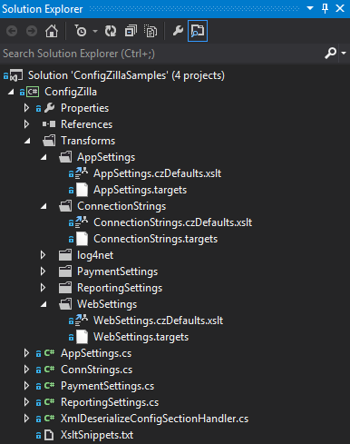

Firstly, I recommend that you clone the complete ConfigZilla repository from https://github.com/PhilipDaniels/ConfigZilla because it contains some Samples that demonstrate most of the ConfigZilla features. (Open the ConfigZillaSamples.sln in the Samples folder).
From the package manager console, do
install-package ConfigZilla
or use the GUI:
Install ConfigZilla into every project that you want to access your configuration settings from. This will do two things. The first and most obvious is that it will create a project called "ConfigZilla" in your solution and your other projects will be given a reference to ConfigZilla too. We'll take a quick tour in a moment. The second, and much less obvious, is that it will install an MSBuild ".targets" file into the .csproj of each project that you added ConfigZilla to. You can see this by right-clicking the project, selecting "Unload Project", then editing the project file. Down the bottom you will find a line like this:
<Import Project="..\packages\ConfigZilla.2.0.0\build\ConfigZilla.targets" />
That .targets file contains the instructions that will transform your *.template.config files into the final *.config files. It hooks into your build process so that the transformation will be made before your project builds. This means the *.config file will be ready and waiting for your build to rename to MyApp.exe.config or to publish. The transformation itself is based upon the contents of the ConfigZilla project, so let's take a look at that before we get into creating templates.
Here's a screenshot of a typical ConfigZilla project. In fact, this is from the ConfigZilla samples.
The newly-created project includes some examples to get you started: feel free to delete anything you don't need although it's a lot more likely you will be adding things.
The Transforms folder. This is where the clever stuff happens. There are two types of files. *.targets files are MSBuild files that are used to define properties. The value of the properties can be controlled using MSBuild Conditional statements, typically you check the $(Configuration) setting to figure out if you are in Debug, Release etc. The second type of file is the *.xslt file. These files use XSL Transformations to change XML. If you check the example appSettings.czDefault.xslt file you will notice it contains what looks like an MSBuild property expression, $(appSetting1):
<add key="Setting1" value="$(appSetting1)" />
In fact, that is exactly what it is. ConfigZilla works like this:
Two points to note. Firstly the structure of the Transforms folder is not fixed: you can create subfolders to any depth you want, and with any name, ConfigZilla simply scans it recursively looking for *.targets and *.xslt files. Secondly, the property substitutions that ConfigZilla makes in the *.xslt files are simply MSBuild property values, this means that the full set of standard MSBuild properties such as $(Configuration) and $(MSBuildProjectName) are available to you and will be evaluated in the context of the project being compiled. A corollary of this, coupled with the fact that ConfigZilla amalgamates everything together, is that it is a a good idea to use a variable prefix such as "app" for app settings and "cs" for connection strings. This will stop any inadvertent clashes.
Strongly typed accessor classes. The C# files AppSettings.cs, ConnStrings.cs etc., are to be used within your solution to read the values of settings. They are in the namespace "CZ", but you can change this if you want. The classes here are only examples and ConfigZilla does not regenerate them. Example usage:
string connStr = CZ.ConnStrings.ConnStr1;
If you don't want some of the examples just delete them.
XsltSnippets.txt. This is a documentation file that includes various "snippets" or "recipes" for transforming XML with XSLT - tasks such as rewriting elements, setting their text values, or changing attributes. It is intended as a quick reference for the common operations to save you from Googling.
XmlDeserializeConfigSectionHandler.cs. This is a base class that can be used to quickly implement custom configuration sections. We will see an example below.
The notes here apply to console applications, class libraries, test projects, WinForms applications and all other project types. Web apps give you a few more things to think about (see below). You don't have to do things in this order, you might start by preparing the .targets files for example, but all three steps need completing before templates will be processed.
Your final config files are created by copying a template and replacing some values in it. Template files are very easy to create - at a minimum all you need to do is copy a .config file and rename it as .template.config. But it's usually a good idea to blank out the values you will be replacing to prevent confusion about where they are coming from. More on creating templates.
The job of the XSLT transformation is to take your .template.config file and transform it into a valid .config file. This is usually achieved by a combination of
You write the XSLT inside a file in the Transforms folder - this folder is special, ConfigZilla always looks for a folder of this name. However, you can split up your transformations into separate files, each one of which is responsible for a certain part of your config files. This helps to keep the files manageable. ConfigZilla will concatenate all your XSLT files together into one large file called ConfigZilla.xslt in the output folder. Read more about how to write the .xslt files. The *.xslt files used in ConfigZilla are special because you can have MSBuild properties substituted into them by using the syntax "$(AnyProperty)" (without the quotes). Arranging for $(AnyProperty) to have the right value is done in the .targets file.
The .targets file is where you create MSBuild properties and give them values. ConfigZilla dynamically loads your .targets file and evaluates it in the context of the project being compiled and the current solution configuration such as Debug, Release etc. You don't need to know much about MSBuild to write a valid targets file, but the important thing to note is that all properties are simple strings.
It's a good idea to write some C# classes to give you easy and type-safe access to your configuration settings. ConfigZilla contains examples for AppSettings and ConnStrings that need no further explanation:
/// <summary>
/// Class to return the AppSettings.
/// </summary>
public static class AppSettings
{
public static string Setting1
{
get { return ConfigurationManager.AppSettings["Setting1"]; }
}
public static string Setting2
{
get { return ConfigurationManager.AppSettings["Setting2"]; }
}
}
/// <summary>
/// Class to return the connection strings.
/// </summary>
public static class ConnStrings
{
public static string ConnStr1
{
get { return ConfigurationManager.ConnectionStrings["ConnStr1"].ConnectionString; }
}
public static string ConnStr2
{
get { return ConfigurationManager.ConnectionStrings["ConnStr2"].ConnectionString; }
}
}These examples are created when you install ConfigZilla and are never overwritten, feel free to change or delete them as you see fit. The samples also contain two examples of custom configuration section handlers - a useful technique for grouping your application settings when they begin to grow. The ReportingSettings class looks like this:
public class ReportingSettings : ConfigurationSection
{
// The string is the name as it must appear in the .config file.
public static readonly ReportingSettings Current = (ReportingSettings)ConfigurationManager.GetSection("reportingSettings");
[ConfigurationProperty("PageSize", DefaultValue = "20")]
public int PageSize
{
get { return (int)base["PageSize"]; }
}
[ConfigurationProperty("Server", DefaultValue = "http://example.com/ReportRequest")]
public string Server
{
get { return (string)base["Server"]; }
}
[ConfigurationProperty("RecipientEmail", DefaultValue = "phil@example.com")]
public string RecipientEmail
{
get { return (string)base["RecipientEmail"]; }
}
}
and allows you to create custom configuration sections that use the "attributes" style:
<configSections>
<section name="reportingSettings" type="CZ.ReportingSettings, ConfigZilla" requirePermission="false" />
</configSections>
<reportingSettings PageSize="20" Server="http://Release.example.com" RecipientEmail="phil@Release.example.com" />
The PaymentSettings example class looks like this:
public class PaymentSettings : XmlDeserializeConfigSectionHandler
{
public static readonly PaymentSettings Current = (PaymentSettings)ConfigurationManager.GetSection("PaymentSettings");
public string PaymentSystem { get; set; }
public string URL { get; set; }
public int Timeout { get; set; }
}
and allows you to create custom configuration sections that use the "elements" style:
<configSections>
<section name="PaymentSettings" type="CZ.PaymentSettings, ConfigZilla" />
</configSections>
<PaymentSettings>
<PaymentSystem>Wordlpay</PaymentSystem>
<URL>https://worldpay.releasemode.example.com</URL>
<Timeout>30</Timeout>
</PaymentSettings>
For classes using this style (i.e. deriving from XmlDeserializeConfigSectionHandler) you can use validation attributes from the System.ComponentModel.DataAnnotations namespace as well as the DefaultValue attribute.
For both of these last two custom sections, you refer to them in your C# using the static "Current" property:
string url = CZ.PaymentSettings.Current.URL;
The .Net configuration system is quite sophisticated, try Google for more examples.
When you create a web application with Visual Studio it will create a Web.Debug.config and Web.Release.config file under your Web.config. These files are not needed anymore, you can just delete them.
Read the notes on setting up .gitignore so you don't accidentally disable your site.